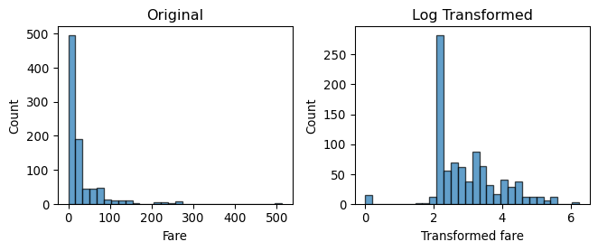

Lab 02-2. Data Transformation: Discretization, Binarization, and Scaling
Author
Byungkook Oh
Modified
2026.09.21
Overview
In this lab, we use Iris and Titanic to examine four questions:
How do equal-width, equal-frequency, and k-means discretization differ?
What extra information does supervised discretization use?
How does one-hot binarization encode a categorical attribute?
How do min-max and robust scaling put attributes on comparable ranges?
NoteImplement in lab02_2.py first
This notebook calls functions from lab02_2.py. Find each # ========== TODO ========== block, remove raise NotImplementedError, and write your implementation. Restart the kernel after editing the .py file, then run this notebook from the top.
On the course site, Practice cell outputs are the expected results after those functions are implemented. Your local notebook will not produce them until the TODOs are done.
Check your functions with:
python-m doctest lab02_2.py -v
2.1 Load the Data
load_iris() reads data/record/iris.csv. If that file is missing, it writes the scikit-learn Iris table there.
load_titanic() reads data/record/titanic.csv. If that file is missing, it downloads the seaborn Titanic table and saves it there.
Equal width considers the value range, while equal frequency considers the number of objects in each interval. Neither method necessarily finds natural groups in the data. Clustering-based discretization uses the data distribution to place boundaries.
Discretization boundaries for the same Iris attribute
TipThink
Why can the same attribute have different boundaries under the three strategies?
Equal width splits the value range, equal frequency splits by count, and k-means follows clusters. Each method optimizes a different criterion.
2.3 Supervised Discretization
With class labels, we can evaluate whether a boundary creates intervals that mostly contain objects from the same class.
A good interval has low class mixing. The entropy of interval \(i\) is
\[
e_i
=
-\sum_{j=1}^{k}
p_{ij}
\log_2
p_{ij},
\]
where \(p_{ij}\) is the fraction of objects in interval \(i\) that belong to class \(j\).
entropy() is provided in helper.py. A pure interval has entropy 0, while an evenly mixed interval has higher entropy.
If a categorical attribute has five categories, how many binary variables are required by compact encoding and one-hot encoding?
Compact encoding needs \(\lceil \log_2 5 \rceil = 3\) binary variables. One-hot encoding needs 5.
TipThink
Why can compact encoding introduce relationships that were not present in the original categorical attribute?
The bit patterns impose closeness that the original categories do not have. Two categories can look similar only because they share bits.
2.5 Functional Transformation
A functional transformation applies a mathematical function to a numerical attribute.
Titanic fare has a long right tail, so we apply a log transformation.
fare = ( titanic["fare"] .dropna())fare_log = np.log1p( fare)pd.DataFrame({"fare": fare.head(),"log_fare": fare_log.head(),})
fare
log_fare
0
7.2500
2.110213
1
71.2833
4.280593
2
7.9250
2.188856
3
53.1000
3.990834
4
8.0500
2.202765
plot_log_transformation( fare, fare_log,)

Fare before and after log transformation
TipThink
What happened to the long right tail after the log transformation?
The tail is compressed. Large fares move closer to the rest of the distribution.
2.6 Scaling
Scaling places numerical attributes on comparable scales.